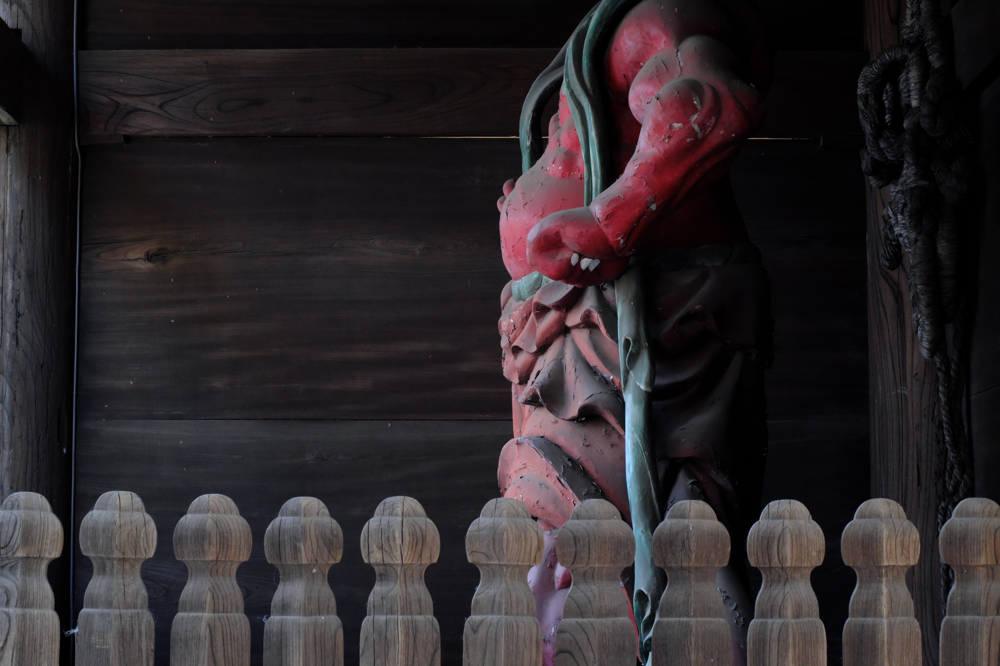
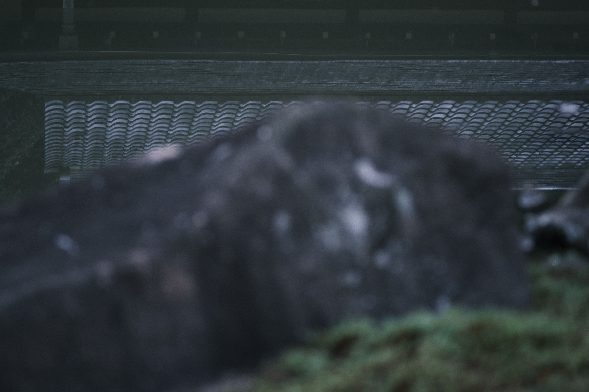
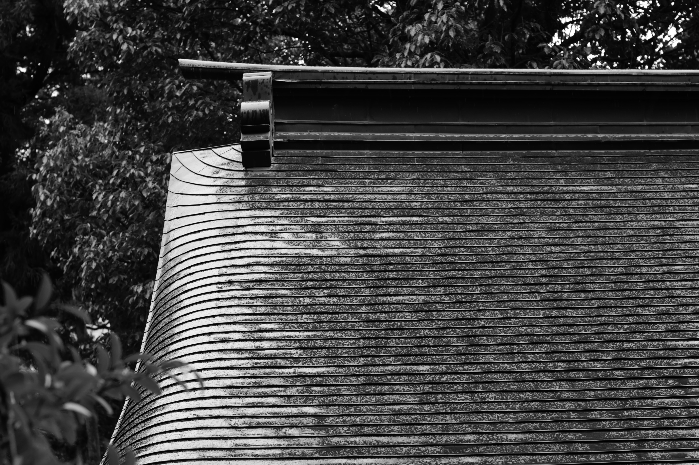
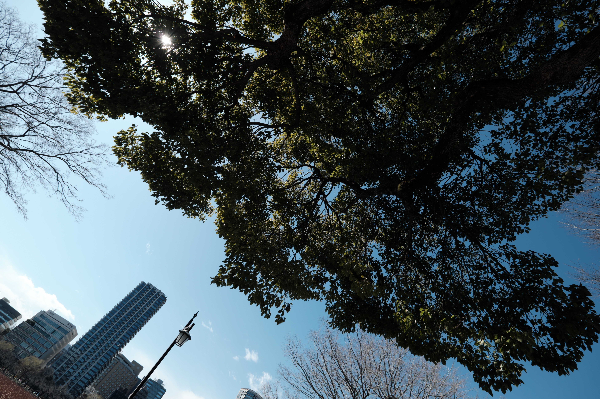
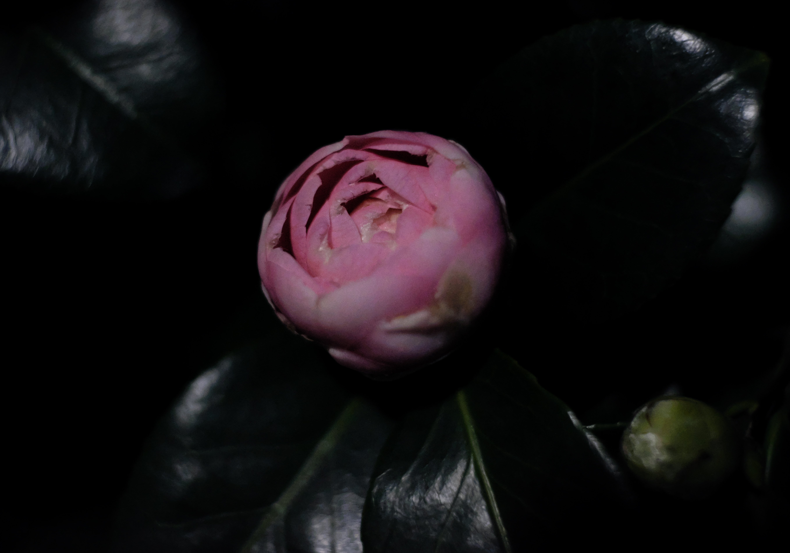
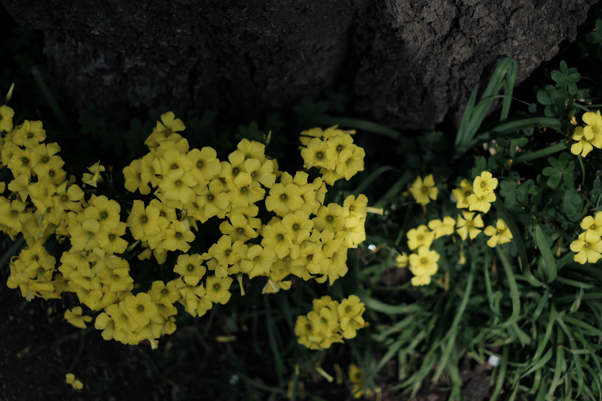
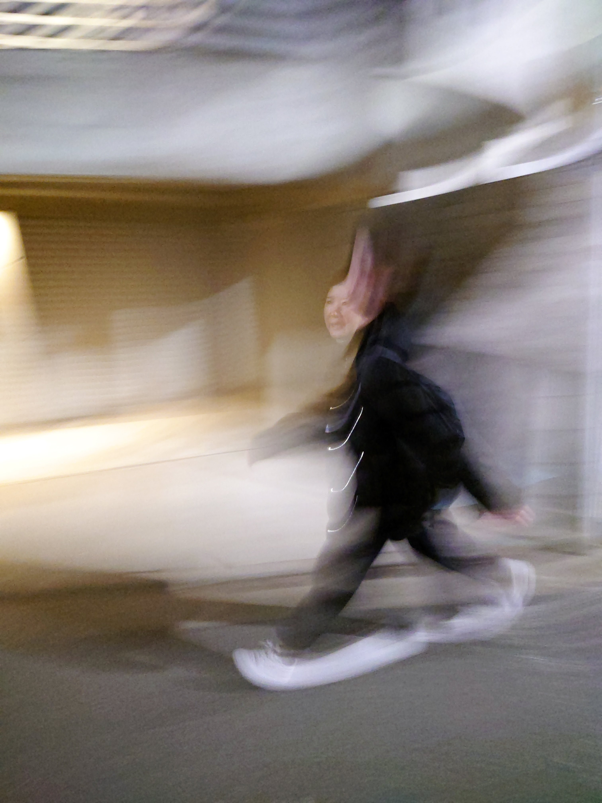

Connected to silence through my lens.
Mr.PHOTOGRAPHERNEWS
view morePICK UP









PROFILE
光の薄い場所にある、輪郭と気配を撮る。
Tokyo based photographer. 旅先の路地、街の湿度、人物の沈黙を中心に、 広告、エディトリアル、個人制作を横断して撮影しています。
- Area
- Tokyo / Kyoto / Travel
- Work
- Portrait, Travel, Still life
- hello@example.com